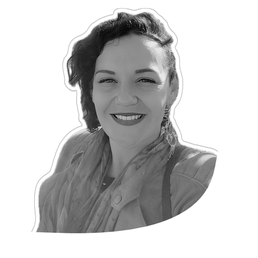

About Me
I'm a dedicated professional, driven by innovation and with a passion for experiences. I belief in applying creativity to all aspects to my life.
I'm a mechanical engineer experienced in R&D, prosthesis design, and manufacturing. Skilled in problem-solving, project management, and clear communication to bridge technical and human needs.
I'm a rising web developer with knowledge on front and back-end technologies, continuously learning and refining my skills to create impactful solutions.
Education
Diploma of Information Technology - Web Developement Specialization
Mindroom Innovation, Australia
2023 - current
Mechanical Engineering
Federal University of Rio Grande do Sul, Brazil
2010 - 2018
Experience
Restaurant Supervisor
Bin232, Gold Coast - AUS
2022 - 2025
Research and Developement Supervisor
PROMM, Porto Alegre - Brazil
2016 - 2022
Languages
Protuguese
Native
English
Professional Working Proficiency
German
Basic Conversational
Spanish
Basic Conversational